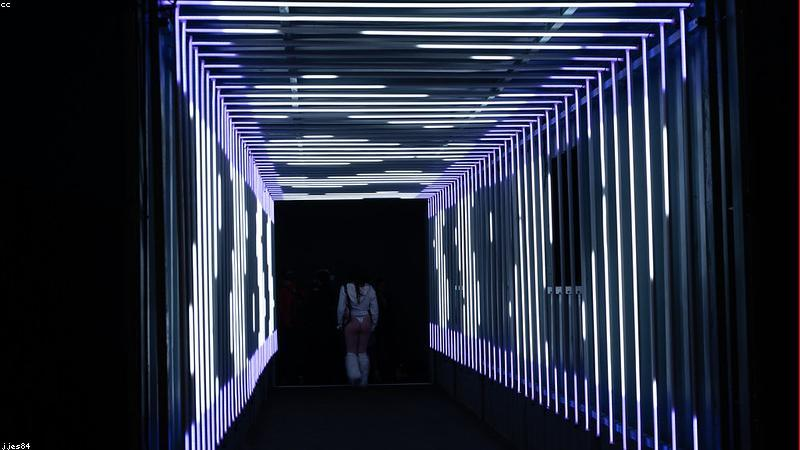

NO. 16
窗影
你看的不是景，是誰在看你。
她對窗發呆，看對樓人家。某天發現，對樓那扇窗，也有個人正看著她——輪廓是她自己。
她拉簾，對面也拉。她舉手，對面舉手。她退後，對面跟著退，卻慢了一拍。
她衝去對樓，那戶空置十年。窗玻璃上，凝著一層薄薄的水氣，映出兩個她。
其中一個，轉身走進牆裡。

她對窗發呆，看對樓人家。某天發現，對樓那扇窗，也有個人正看著她——輪廓是她自己。
她拉簾，對面也拉。她舉手，對面舉手。她退後，對面跟著退，卻慢了一拍。
她衝去對樓，那戶空置十年。窗玻璃上，凝著一層薄薄的水氣，映出兩個她。
其中一個，轉身走進牆裡。